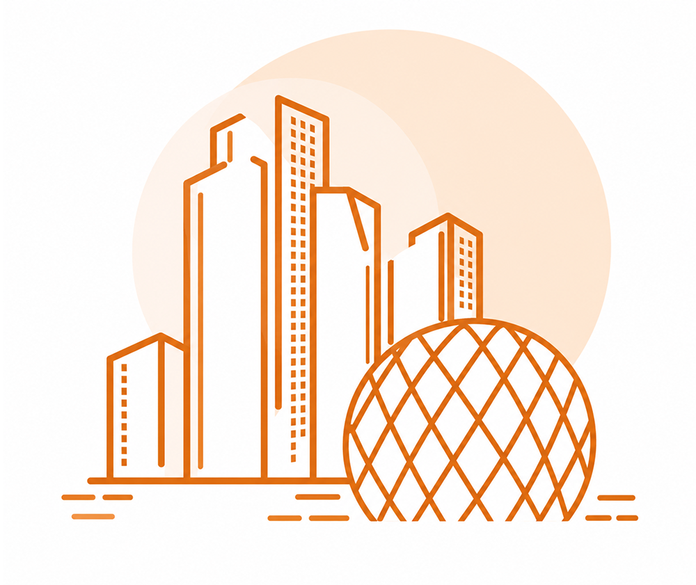

Overview
Abu Dhabi · 2025 Census data
Abu Dhabi's population reached 4.44 million in 2025, growing 7.4% year-on-year, with the employed population up 7.7% and housing units up 2.9%. Growth remains concentrated in Abu Dhabi Region, and the population skews heavily male (67.3%) — a pattern driven by the non-Emirati workforce.
Census at a Glance

Regional Profile
Population, labour force and built environment by region
Population, Labour Force, Buildings and Housing Units by Region
| Region | Population | Labour Force | Buildings | Units |
|---|---|---|---|---|
| Abu Dhabi Region | 3,066,635 (69.0%) | 2,047,185 (68.8%) | 176,905 (54.2%) | 624,455 (69.4%) |
| Al Ain Region | 1,020,955 (23.0%) | 661,245 (22.2%) | 117,425 (36.0%) | 207,205 (23.0%) |
| Al Dhafra Region | 353,960 (8.0%) | 268,090 (9.0%) | 31,805 (9.8%) | 67,910 (7.5%) |
Abu Dhabi Region accounts for roughly seven in ten residents, jobs, and housing units across the Emirate (69.0% population, 68.8% labour force, 69.4% units) — despite holding just 54.2% of buildings, pointing to denser, more multi-unit housing stock than Al Ain or Al Dhafra.
Emirati Jobseekers
Emirati jobseekers by gender and region, 2025
Emirati jobseekers are 71% female — the opposite gender skew from the population and labour force overall (both majority-male). This points to a distinct Emiratisation and female-workforce-participation opportunity, separate from the broader labour market story.
Key Insights
What do these Census findings mean?
News
Authoritative news and statistical briefings to support data-driven decisions across Abu Dhabi's population, workforce and built environment.